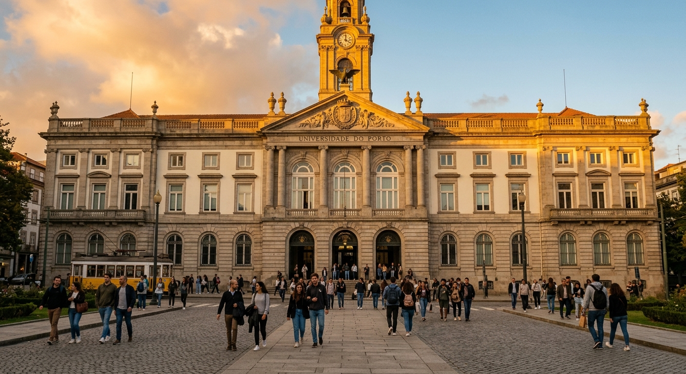
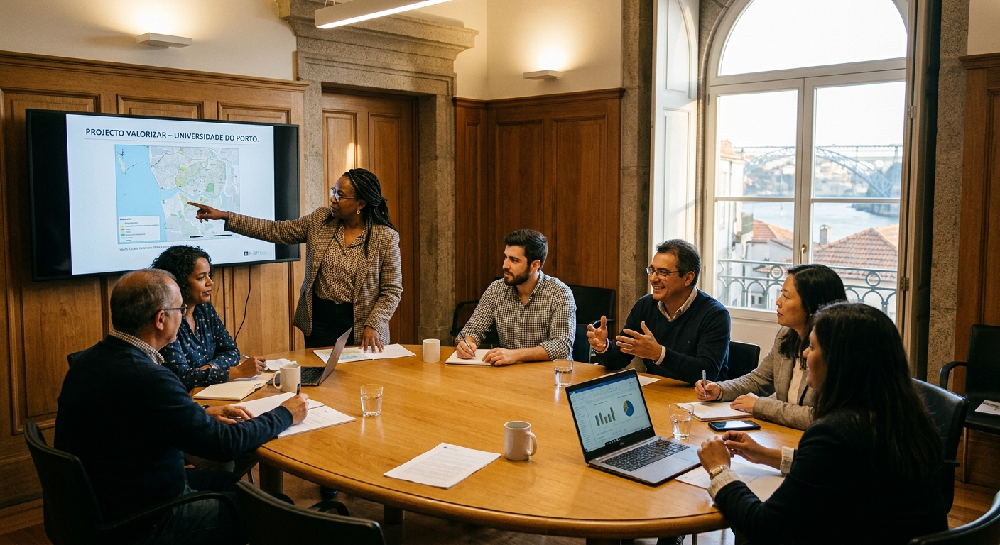
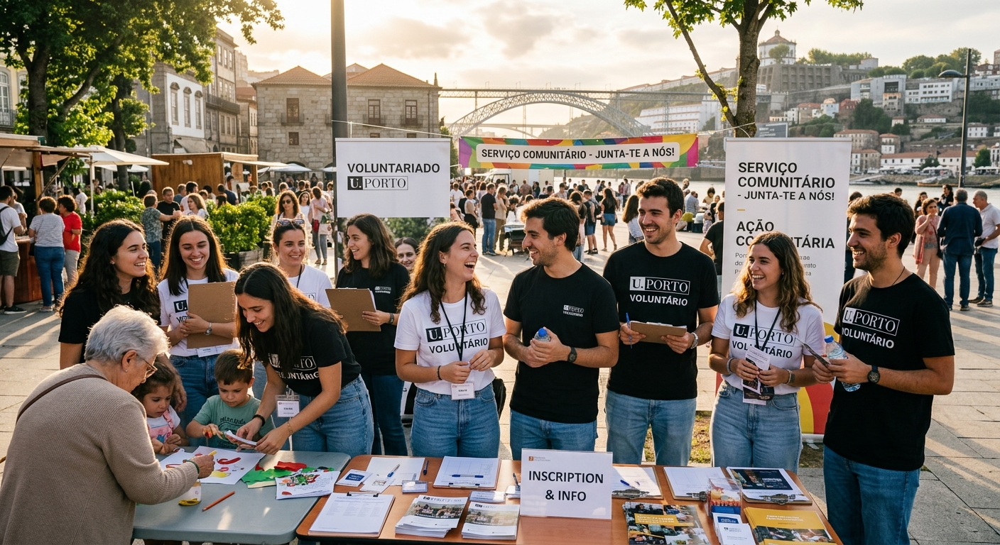
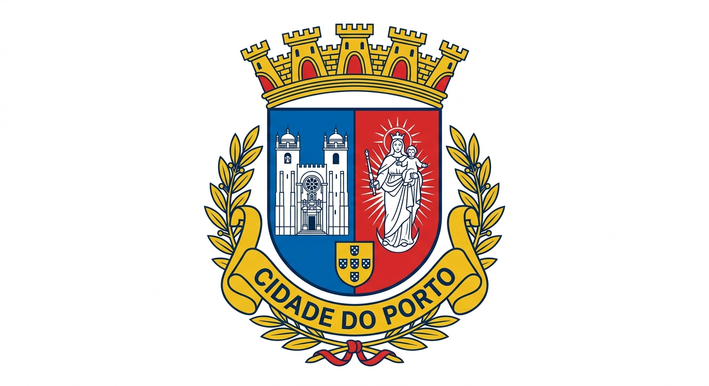
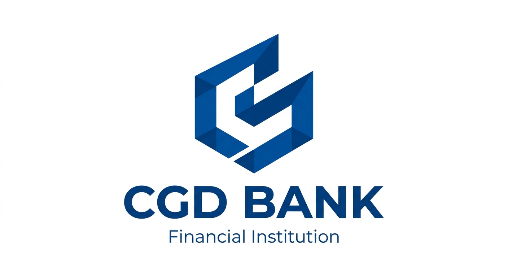
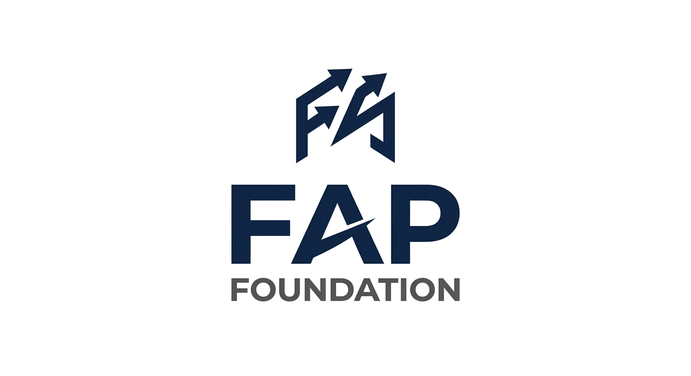
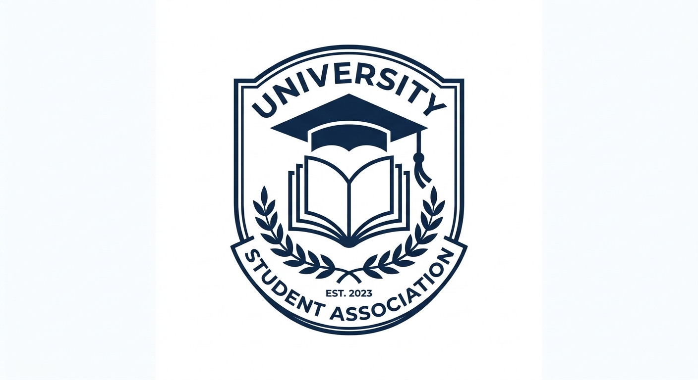
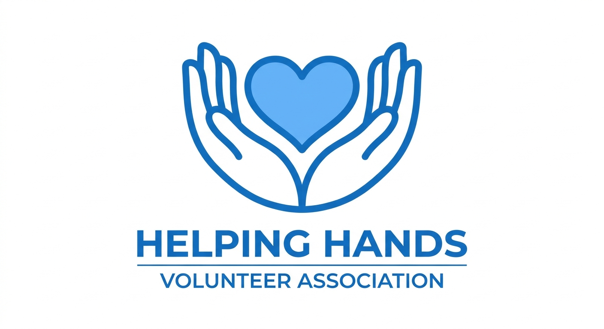
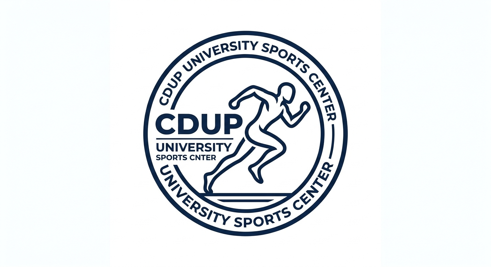
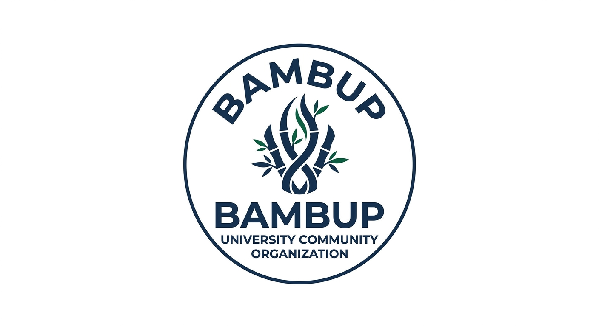

Semana Solidária · U.Porto
Organização
ReVIReS — Rede de Voluntariado, Inclusão e Responsabilidade Social da U.Porto

Sobre a ReVIReS
A ReVIReS é a Rede de Voluntariado, Inclusão e Responsabilidade Social da Universidade do Porto. Promove a cidadania ativa e o voluntariado entre estudantes, docentes e funcionários, articulando com parceiros comunitários.
Descrição detalhada em atualização.
Vídeo institucional da ReVIReS

Parceiros
Quem nos apoia







Logótipos em atualização.
Contacto
Fale connosco
Informação de contacto em atualização.